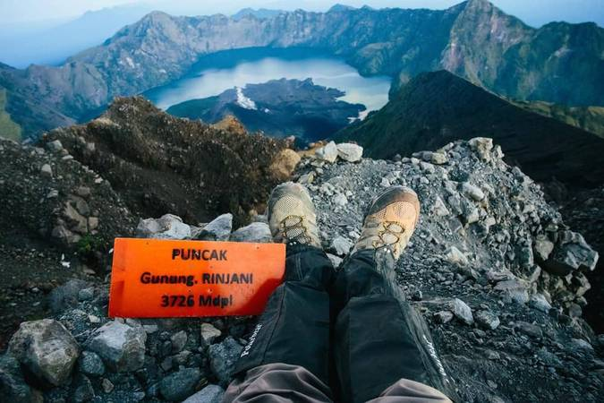
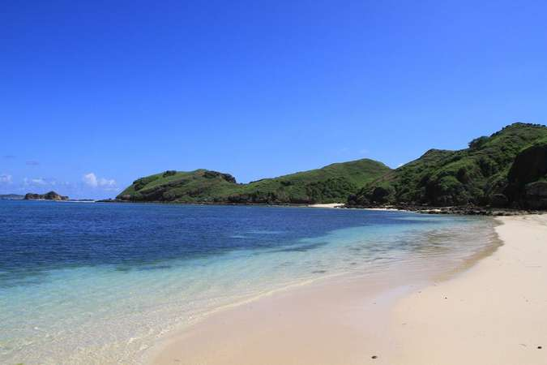
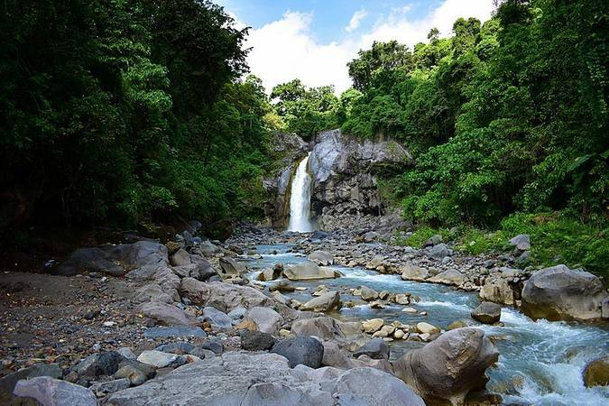

Wisata Lombok
Taman Nasional Gunung Rinjani
Di area sekitar 40.000 hektar, berdiri kokoh gunung berapi tertinggi kedua di Indonesia, yaitu Gunung Rinjani. Terdapat dua jalur pendakian resmi untuk mencapai gunung dengan ketinggian 3.762 mdpl ini. Kamu dapat memilih jalur Senaru di Lombok Utara atau Sembalun di Lombok Timur.
Gunung Rinjani menawarkan pemandangan luar bisa yang menjadi favorit para wisatawan, mulai dari lereng hingga ke puncak tertingginya, yaitu Puncak Dewi Anjani. Jika Semeru memiliki Ranu Kumbolo, di Rinjani ada Segara Anak. Ingin mencoba pengalaman berkesan lainnya? Kunjungi pemandian air panas alami yang berada tak jauh dari Segara Anak.
Pantai Senggigi
Pantai Senggigi menjadi ikon, sekaligus magnet wisata utama bagi Lombok. Pantai pasir putih sepanjang 10 kilometer yang membentuk teluk ini berada dekat dari Mataram. Kamu dapat berkendara menempuh perjalanan sekitar 40 menit saja. Ada banyak aktivitas seru yang bisa kamu lakukan di sini, sama halnya seperti di Pantai Kuta, Bali.
Di Pantai Senggigi, kamu bisa bermain pasir, berenang, menyaksikan matahari terbenam, hingga snorkeling untuk melihat pemandangan karang bawah laut yang mengagumkan. Jangan lupa untuk mencicipi kuliner khas di sekitar pantai, seperti plecing kangkung dan ayam taliwang, ya!
Air Terjun Mangkusakti
Di tengah hutan kaki Gunung Rinjani, tepatnya di Sembalun, terdapat air terjun setinggi 30 meter yang mengalir di antara batuan tebing menawan bernama Air Terjun Mangkusakti. Aliran air ini merupakan bagian dari Sungai Kokoq Puteq yang sumber airnya berasal dari Segara Anak. Tepat di bawah air terjun ini, kamu juga bisa berenang di kolam alami yang jernih dengan warna biru toska yang menyejukkan mata. Tertarik untuk bermain air di sini?